Wooden Record Player
Choose a track and a resident brings you its disc. Place it on the platter to listen together. Return that same disc before changing the music.
Inspect the wooden record player in 3D
Mixed reality game · Meta Quest 3
Five tiny residents. One second-hand suitcase.
The residents leave their old woodshop with their furniture in pieces. As their Room Host, you help restore each belonging and find a place for it in your own home.
Game and interaction design, character direction, and technical art.

A reason to build together
The residents took their furniture apart when they left the old woodshop. Their bench, shelf and table travel with them in a second-hand case. Opening it gives you two roles in the same room. You help them make things at the workbench and make space for them as their Room Host.


At the workbench a good fit has a physical answer. In a conversation the resident gets a say. Put a tool down to listen, respond or negotiate, then pick it up and return to the same operation.
Completing the six core projects leads to an invitation to stay. Four further projects give the household more places to spend time together.
Learning to read a joint
How can a player tell where a piece of wood belongs? I studied 34 Chinese joinery families and variants, to see what carries the load, which shapes fit together and what has to go in first. Those clues became part of the game.
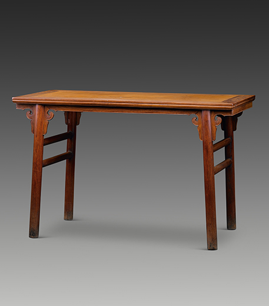

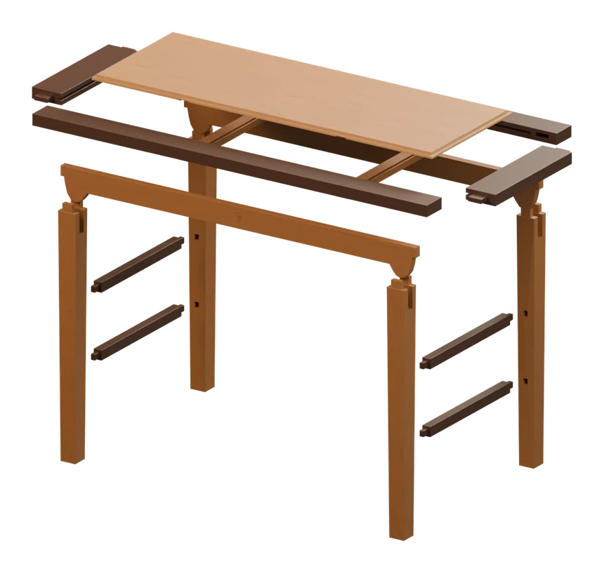
One influenced what happens around a finished table. The other influenced what the player feels while making it.

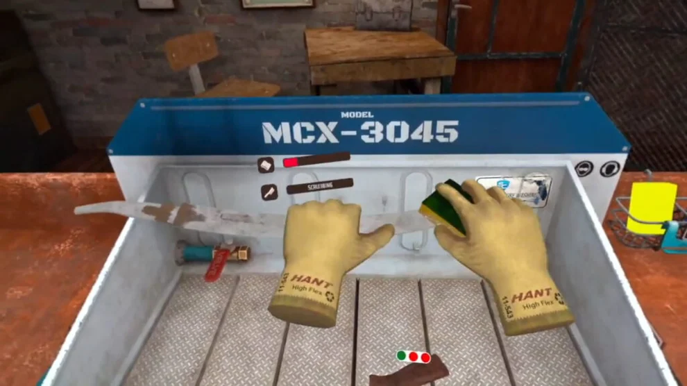
My October survey grouped joints, locking pieces and assemblies by the construction problem they solve. A through-tenon shows where it enters. A pin adds a second action that locks it in place. Closing a frame too soon can block the next piece entirely.
The groups below include the architectural and puzzle structures I considered as extensions.
Read the original research notes (中文)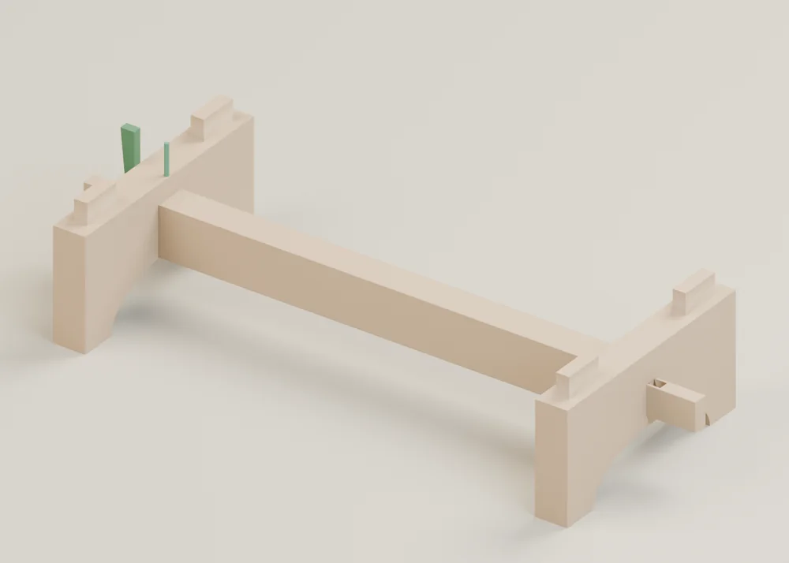

Three original Blender studies put those observations into practice. I built 30 separate wooden parts and checked 21 sampled insertion paths against the surrounding geometry.


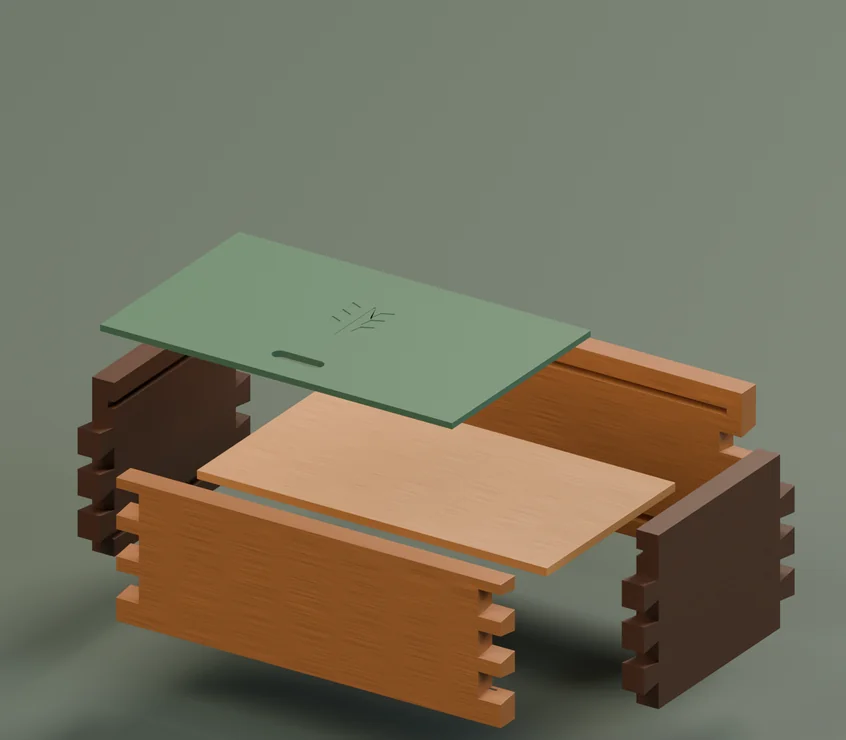
Inside the suitcase
The suitcase opens into two connected places. Five residents live on the case. Across a short bridge, the player works at a turntable with tools on the left and pigments on the right.
The current instruction and its progress sit beside the workpiece.
Tools are grouped by use. Each handle faces the player so it can be picked up directly.
Click the red lever to unlock the turntable. Turn it with the left stick, then lock it before cutting.
The five residents gather on the open case. A sliding bridge joins their home to the worktop.
The drawing keeps the parts, joint order and carving motif in sight while both hands are busy.
Brushes stand beside the pigments and mixing well on the right, clear of the repair tools.
From joint to finish
Each recipe selects the work its furniture needs. A peg repair calls for a drill and a saw. A carved surface calls for a gouge, a brush and a lighter touch.
 Assembly
AssemblyRead the drawing, find the matching part and release it at its seat. Secure the joint with a tap or a turn.
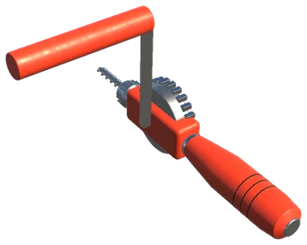
RepairClamp and mark the damage. Drill, peg and trim a hole, or cut a shallow groove and glue in a strip of old wood.
 Surface
SurfacePlane the repair flush, sand the surrounding wood and sweep away the dust.
 Relief
ReliefTransfer the pattern, cut its outline and carve the recess. Sand the edges before brushing it clean.
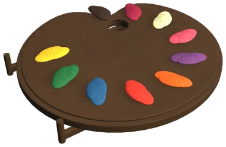
Colour and finishMix the pigments, test a stroke on an offcut and paint the carving. The Reading Table gets a final coat of wax.
The player chooses the parts and their order. The final alignment assist reduces the small wrist adjustments needed to seat a joint.


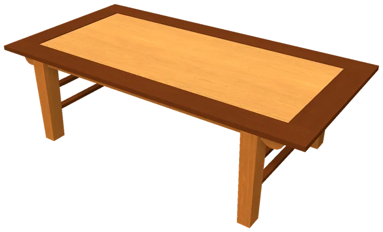


Turn the tools, fixtures and materials to inspect their working ends. Each object links to the operation that uses it.
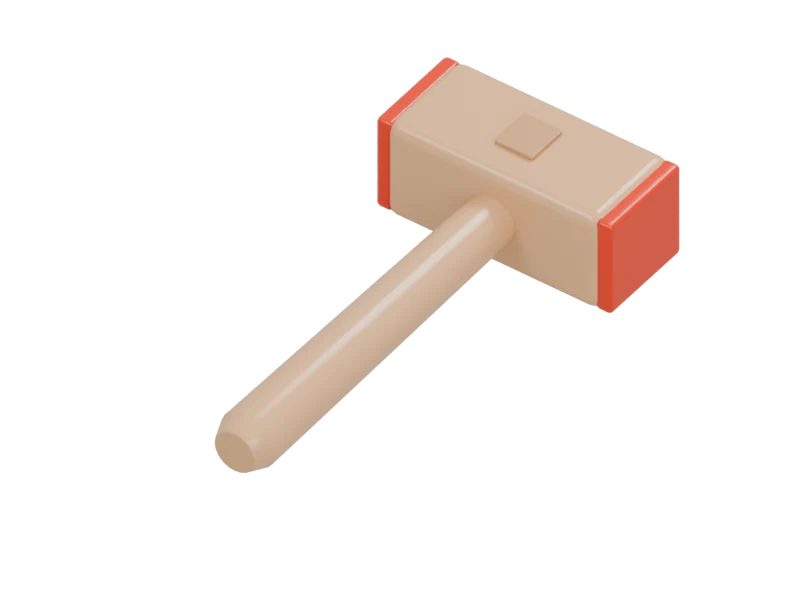


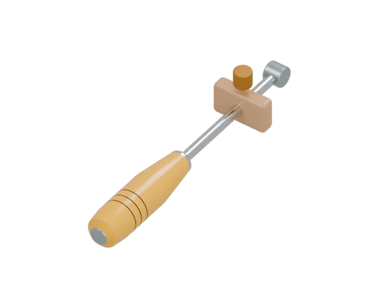
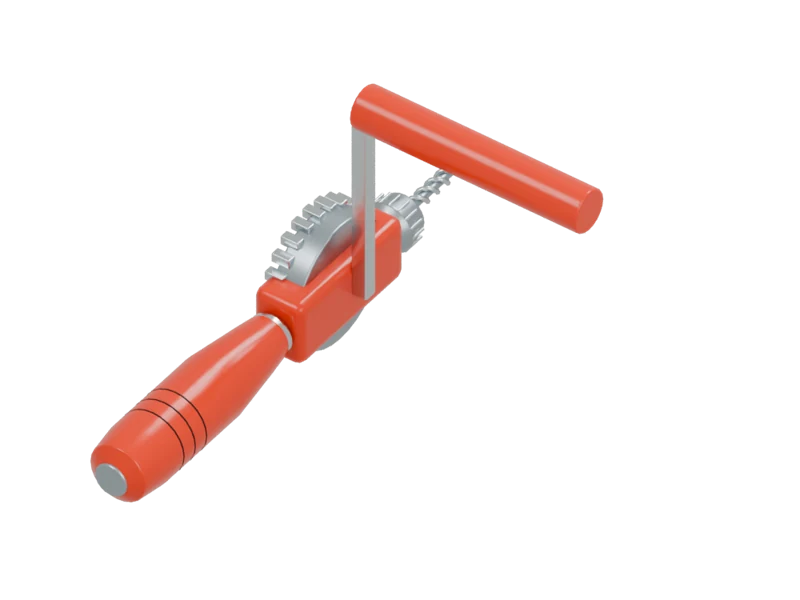


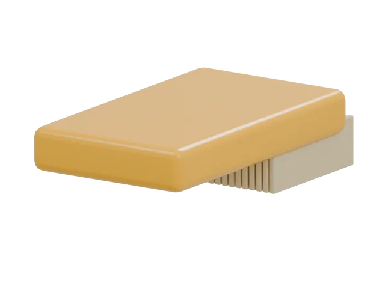
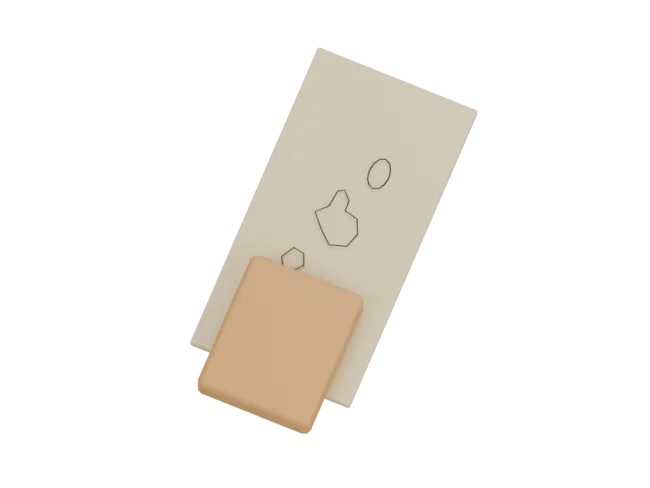


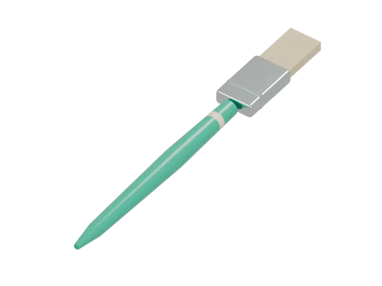

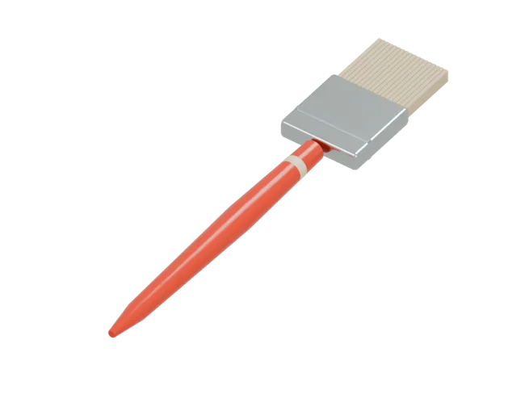
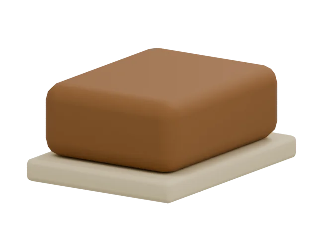
 Find the part
Find the part
Read the drawing to find the part and the supporting pieces that must already be in place. Move it towards its empty seat. Within the capture radius and 22 degrees of the target angle, releasing the grip commits the fit.
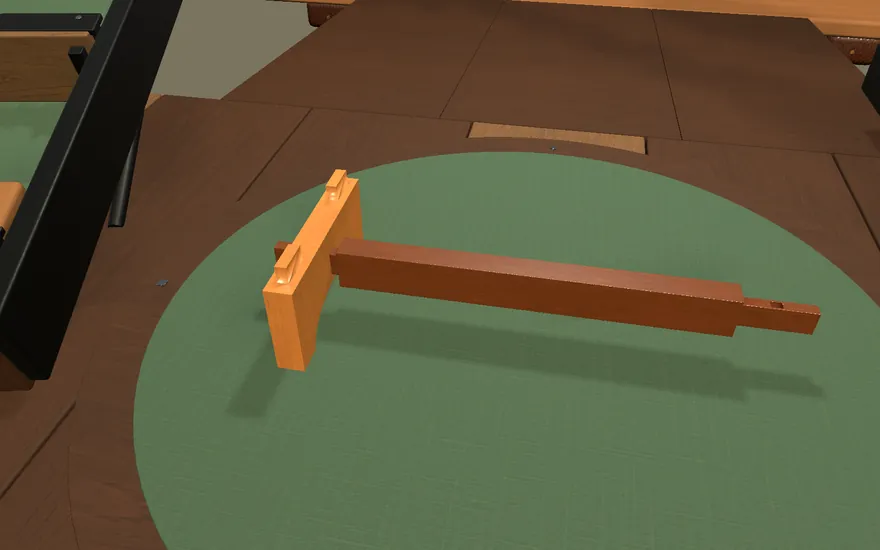
Seat a wooden jointLift the mallet and tap each highlighted joint. Watch the gap close as the contacts seat the wood.
Joinery mallet Fasten the hardware
Fasten the hardware
For a screwed connection, seat the driver, hold the trigger and turn clockwise. Finish each fastening site before fitting the next part.
Slotted screwdriver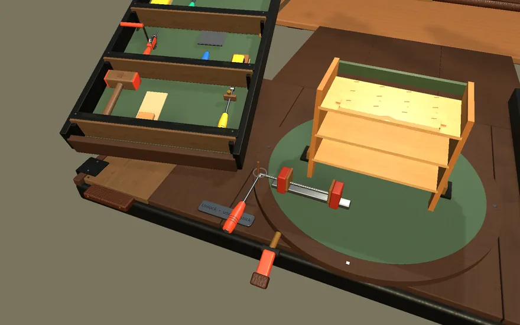
Hold the workpieceLock the turntable. Turn the padded clamp’s handle clockwise with the screwdriver to steady the workpiece for repair.
Padded clamp, Slotted screwdriverTrace the highlighted strip with the gauge. The mark gives the next operation a destination.
Marking gauge Drill the hole
Drill the hole
Set the bit on a mark and turn the side crank. Crank travel deepens the hole. A support can hold the drill while the same hand operates it.
Hand-cranked drillPress a wooden peg into each drilled hole until it settles into its matching position.
Wooden peg Seat the peg
Seat the peg
Lift the mallet and give each peg three accepted taps to seat it in the wood.
Joinery mallet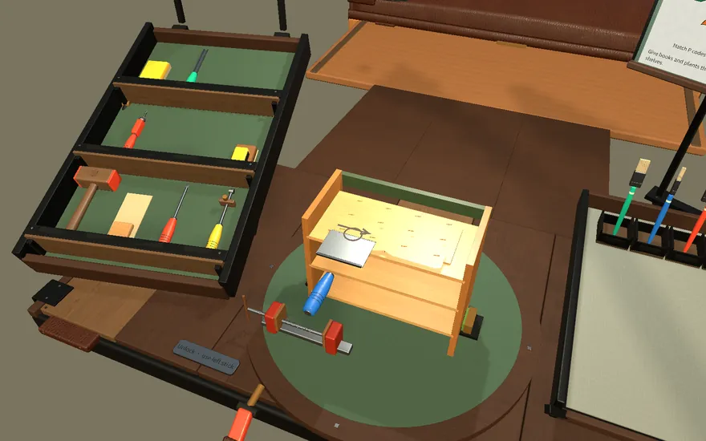
Saw it flushMove the saw back and forth across the projecting peg until it is level with the surrounding surface.
Flush-cut saw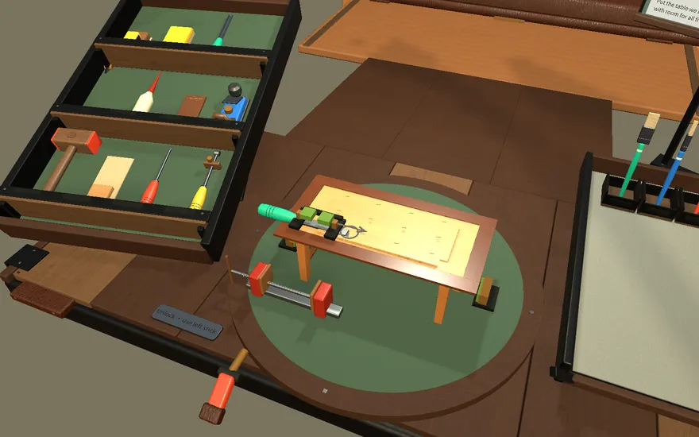
Cut a shallow grooveSteady the chisel at the neck and push shallow passes through both groove regions.
Flat chisel Lay down glue
Lay down glue
Hold the trigger and draw the nozzle along the groove, covering all three repair regions with a thin layer.
Wood glue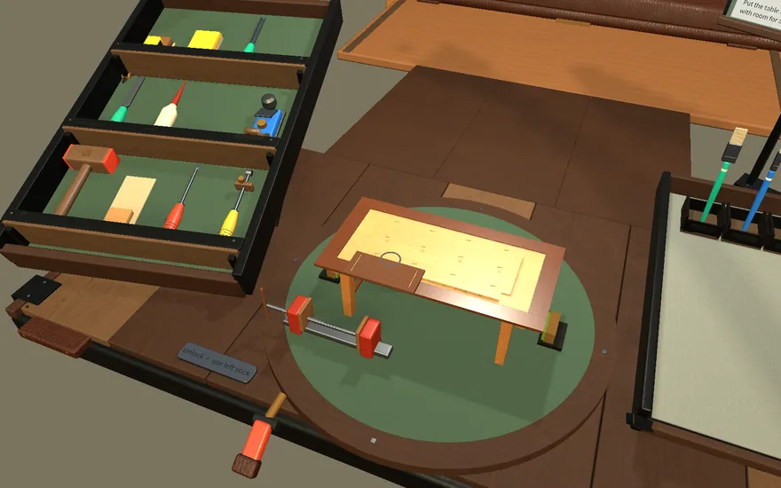
Set the inlayPress the old-wood strip into the groove, then tighten the clamp to hold it through the short setting time.
Old-wood inlay, Padded clampLevel the strip
Keep the plane’s sole near the wood and push over the repaired strip until it meets the surrounding surface.
Hand plane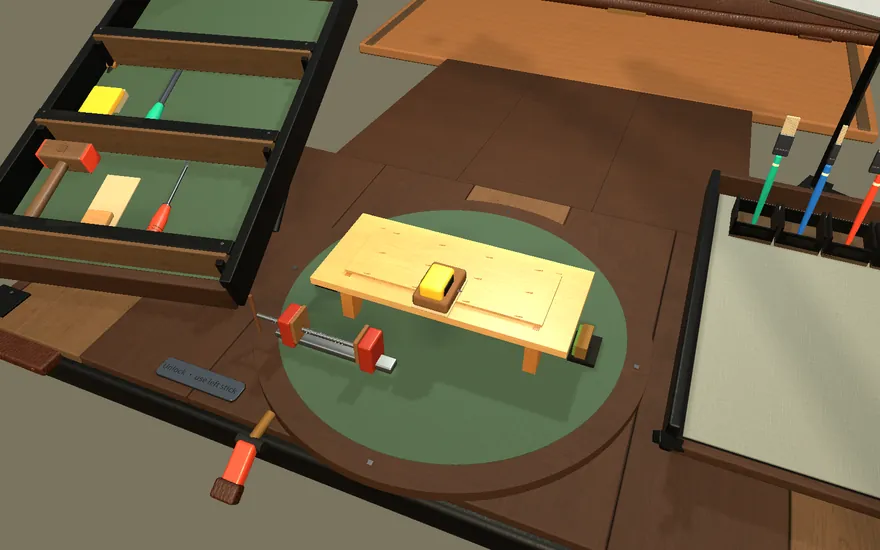
Sand the surfaceRub across the front, middle and rear. The distance travelled in contact with each region counts towards its finish.
Sanding block Brush away dust
Brush away dust
Sweep all three prepared areas with the dust brush before transferring the pattern.
Dust brush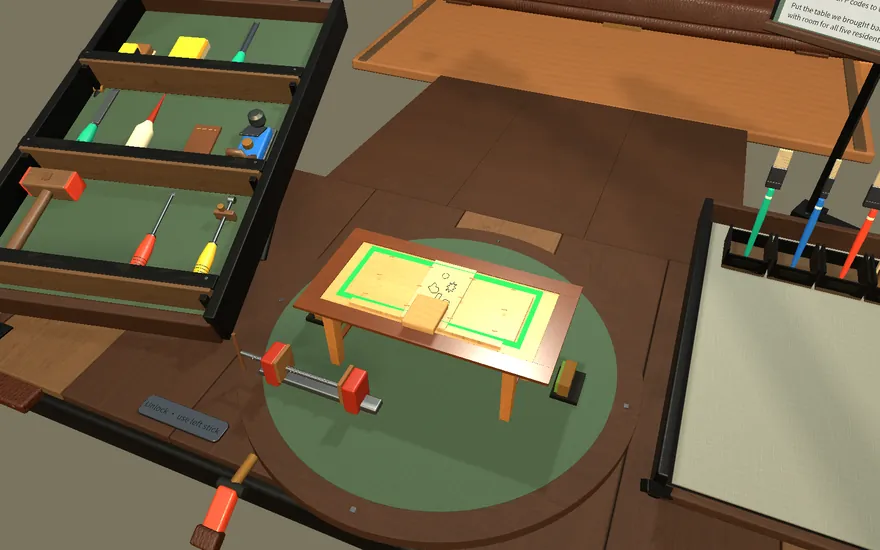
Transfer the patternAlign the sheet on the highlighted wood and press briefly. The transferred motif defines the boundaries for carving.
Transfer sheet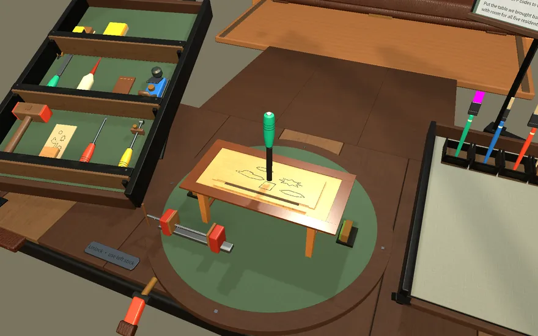
Trace the outlinePush the gouge along the transferred boundaries. Following each edge leaves a visible shallow cut.
Carving gouge Carve the recess
Carve the recess
Use shallow passes inside each outline. Covered regions become recessed geometry in the surface.
Carving gouge Refine the edges
Refine the edges
Sand the carved area to soften its new edges while keeping the shallow relief.
Sanding block Clear the carving
Clear the carving
Sweep the carved regions clean. Their outlines and interiors also define where the paint will go.
Dust brush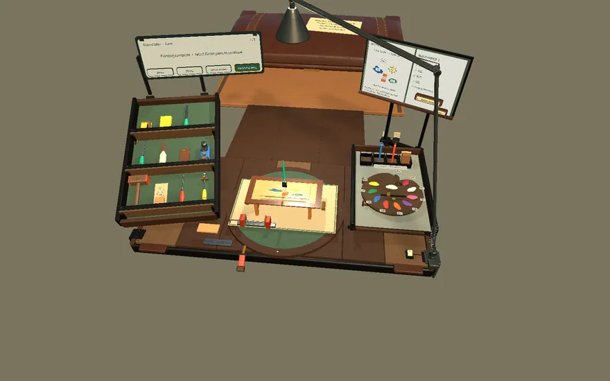
Prepare the paletteAt the painting station, match the numbered pigments to the drawing. Designs that call for a mixture use the well in the middle of the palette.
Paint palette, Painting matTry a stroke on the offcut. Use a flat brush for broad coverage, a detail brush for tight edges or a dry brush for texture. Adjust the stroke width before moving to the piece.
Practice offcut, Flat brush, Detail brush, Dry brush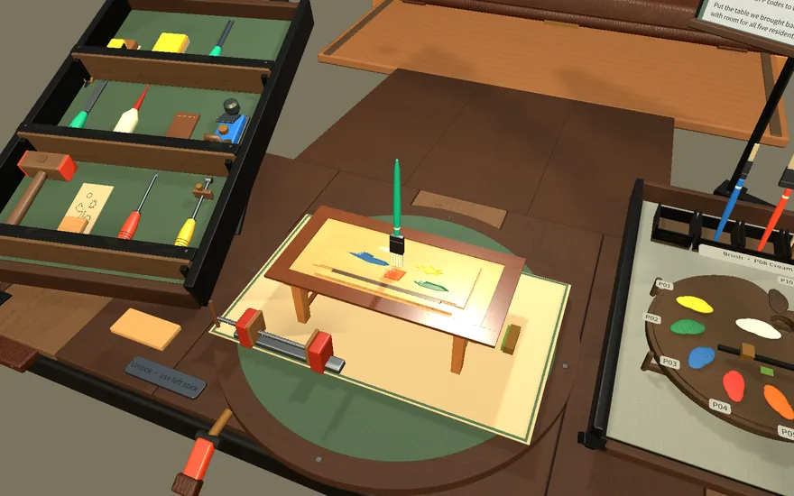
Fill a regionFollow the motif with the selected colour. A whole stroke can be undone. The marks stay in local surface coordinates as the piece rotates and when it is placed or saved.
Flat brush, Detail brush Apply wax
Apply wax
The Reading Table gets a final coat after painting. Rub the pad over the completed surface to spread a thin wax finish.
Wax padReading the workshop manual
The left page keeps the whole piece in sight. The right names the current connection and shows the path the part takes into its seat. Each view can be rotated with a trigger drag and enlarged with the thumbstick, independently of the other.
A player can browse a step, replay the movement or pause its timeline. Their actual build stays where they left it.

On this step, the high shelf slides in from the front. Compare the start and end of its illustrated travel, then look at the two contact faces. In the game the X-ray control ranges from 35% to 80% opacity.


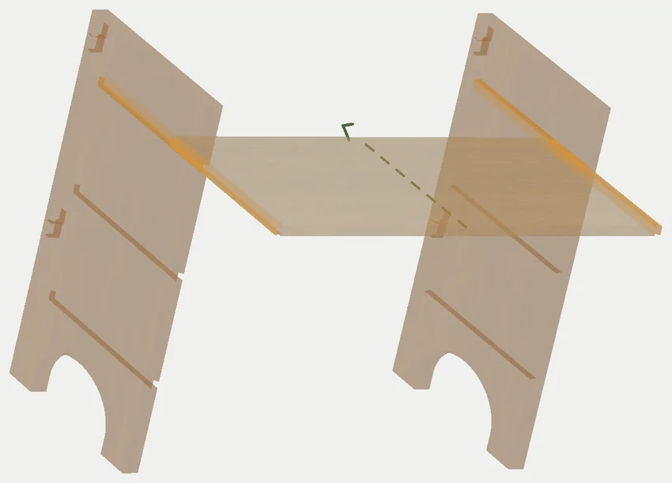
Putting a shelf into a groove, turning a top over and bringing a rail into a side panel need different pictures. Each spread pairs that movement with the shape the player is building towards.
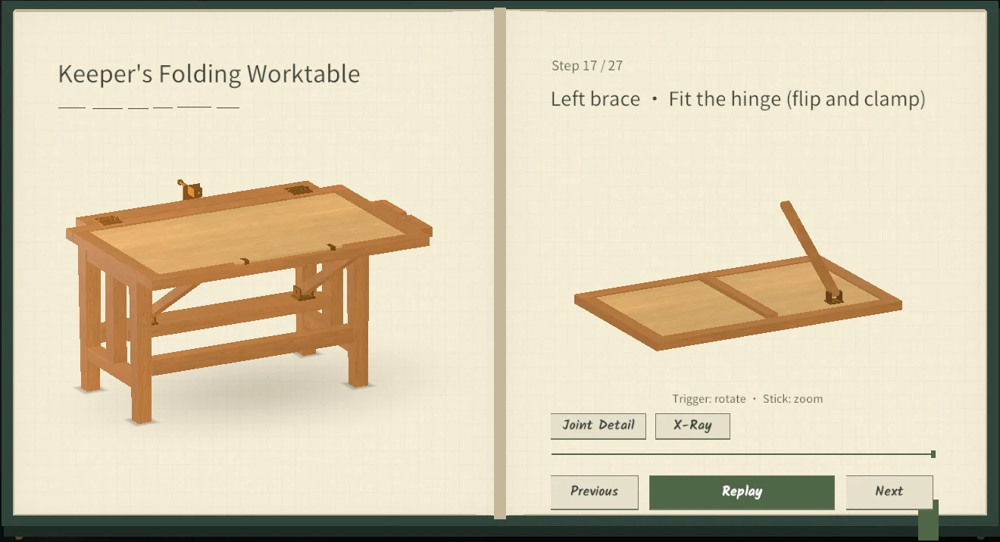


Once assembly is complete, the process sheet shows five operations per page. Here, flush sawing has a checkmark, sanding is active, and dusting comes next. The three states help the player resume after a conversation.
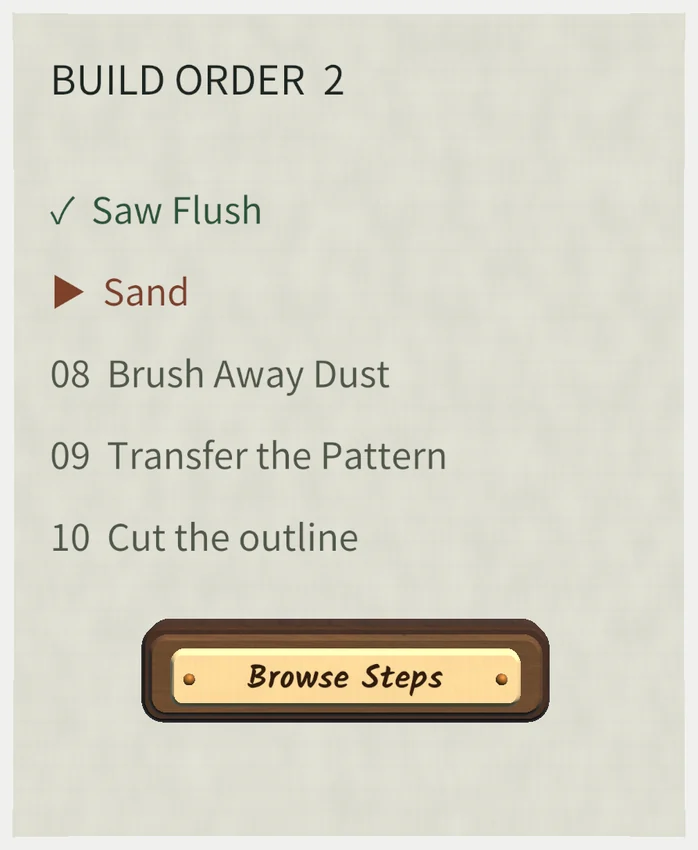
Objects for a shared room
I designed ten pieces of wooden furniture using traditional Chinese mortise-and-tenon joinery. Restoring each one brings back something the residents used to do together.
Choose a track and a resident brings you its disc. Place it on the platter to listen together. Return that same disc before changing the music.
Inspect the wooden record player in 3D
Archivist needs to reach a book. Sprout needs room for leaves. Listen to both residents, choose an arrangement and see how they share the shelf.
Inspect the reading shelf in 3D
Add tea and water, steep for eight seconds, then fill the cups. As everyone drinks, the different cups and habits become a way to get to know their owners.
Inspect the reading table in 3DRotate an assembled piece and compare it with the same belonging in use. The bench also opens into an exploded view.


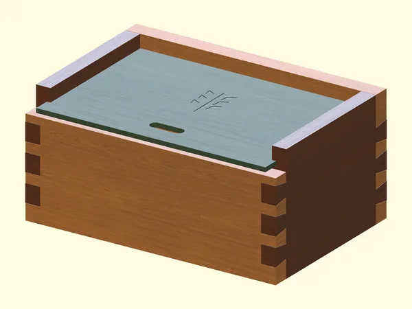
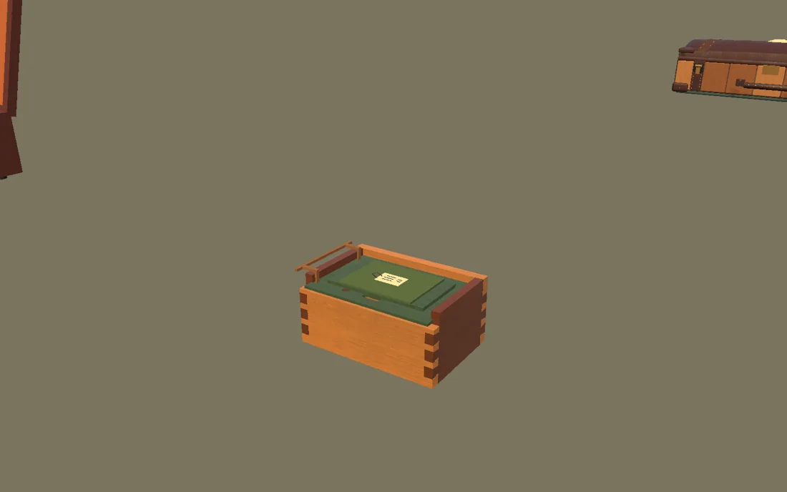


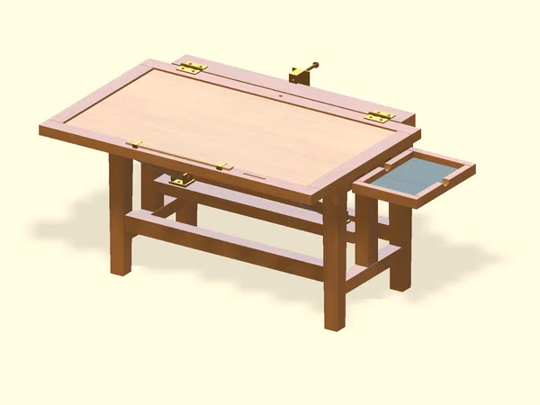


A place in your room
Your tabletop sets the direction of the workshop. The real room around it decides where a chair can go, where a resident can walk and when they need you to give them a lift.


The workshop, the furniture and the player’s hands each have a different role in the spatial system.
Meet the roomies
Five people can reassure you in five different ways. Sprout leaves a little space between gestures. Courier rushes into a phrase, opens his arms, then waits. Each resident carries that same rhythm into the workshop and the room.
Listen to the five residents.

Gentle gestures and patient pauses. Sprout tends leaves and turns the cup handle away from them to make a little room.

Keeper checks the alignment of the wood before a reassuring nod. At tea, a small sip brings the drink back down to a familiar fill mark.

One hand supports the book while the other turns the page. Archivist marks the place before sipping and finds it again after a cup mix-up.

Open gestures give way to a sudden pause. Courier retrieves offcuts, shares music and shows the player how to grip his own cup.

Small gestures stay close to the body. Page keeps familiar wood and belongings, and will lend the old cup sleeve when the player asks.
I used Qwen3 VoiceDesign to render “We can try again. Take your time.” in five voices. I kept the stresses and pauses as wordless syllables. Unity selects a take by resident and intention, then reads its loudness every 10 milliseconds to open the mouth as the sound plays.


Archivist marks the page and lifts Courier’s orange cup. The eyes widen as the voice catches. The hand finds the handle of that same cup to return it. Once it is back, Archivist can resume reading and later recall the mistake.

A moment to respond
Set a tool down and the work will wait. A resident can ask for help, or for a little time to sort something out. The player can answer, take part and pick up the same repair afterwards.
Page has kept the sleeve since the move. To see the packing mark underneath, set the empty cup upright and wait for her reply.
Once she agrees, slide the sleeve off through its seam and rest it on the pad. Returning the same sleeve ends this permission. The next visit begins with a fresh request, while the story about the mark can still be remembered.

Deep in the book, Archivist reaches for someone else’s tea. How much help does he need?
Help return the orange and cream cups to their owners’ rests. Archivist resumes reading and remembers being helped.
Archivist puts the same orange cup back where he picked it up, finds his page and remembers settling the mix-up himself.

Tea rises above Keeper’s familiar fill mark. First, set the cup down safely. Then decide what to do with the extra.
Keeper lifts the cup and drinks a little tea. The level drops, and Keeper can mention this preference another day.
Pour the excess into a small serving cup. The physical transfer completes the exchange and Keeper remembers the response.
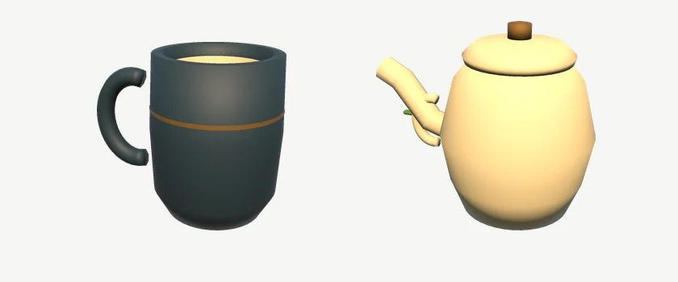
How the project changed
The question changed twice. First, what could the player and the residents do together between encounters? Then, why would a resident care about the object the player had just earned?
Residents occupied corners of the room, followed routines and met by chance. Between those encounters, playtests left long stretches with little to do together. I brought everyone into one activity inside the suitcase.

Transport cards and mechanical levels gave the household a common task. The furniture earned at the end still had little connection to the residents’ lives. I kept the shared work and changed what it was for.

The furniture now arrives with its owners. The player assembles, repairs, decorates and places the same piece the residents later use. Requests, shared routines and remembered choices continue around it.


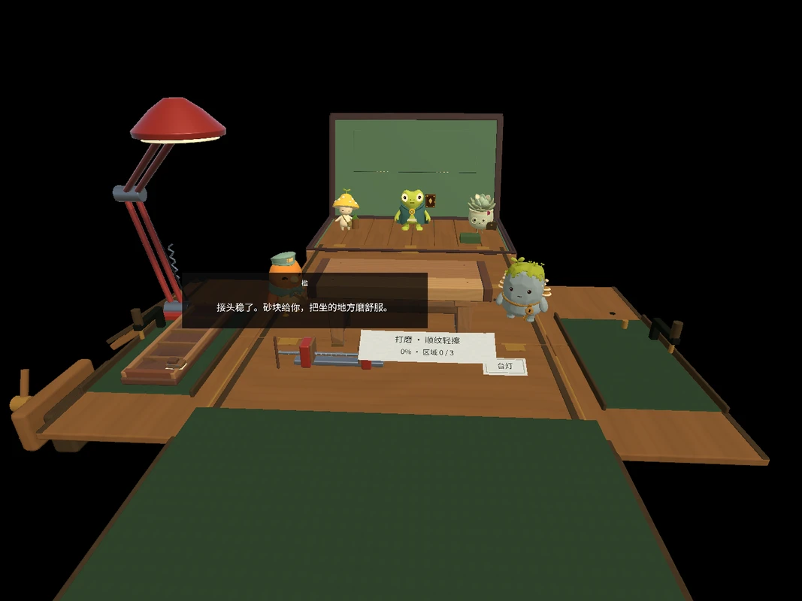

Keep the work within reach
A playtester with less strength in their left hand found sustained holding tiring. I moved the instructions closer and gave the tools supports, so a player can choose, position and operate a tool with one hand.
Both layouts keep the 38 cm reference reach and a level right tray. The left side changes to meet a seated player.

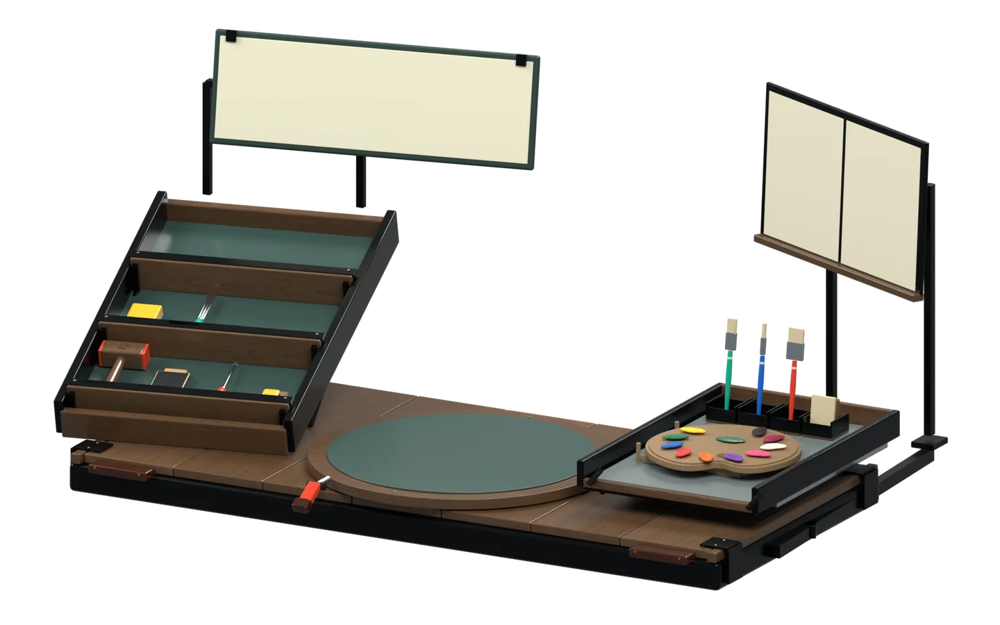
From making to moving in
The playable prototype brings ten joinery furniture pieces and five residents into a shared room. It keeps the finish and position of the furniture and remembers completed exchanges, from a borrowed belonging to a choice made during a song.
Meta Quest 3 · Unity · OpenXR
Three implementation studies address different costs in a room full of small objects.


The leg above shows how an opening interrupts a solid face. A separate 23,056-triangle wall-contact test checked two candidates in the forward query and three in reverse.
For 16,384 edge keys, the default hash produced 15 distinct values. The mixed hash produced 16,384. Across eight repeat rounds, cached face bounds were reused with zero new bounds.
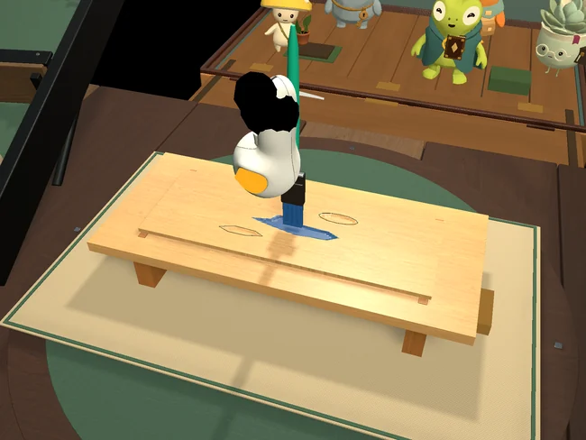

One paint mesh per piece holds up to 3,200 brush samples. Laying new paint appends and uploads marks. An unchanged piece reuses its mesh, and a moved part reprojects its marks so openings stay clear.


The wood keeps a 2K colour map with 1K normal and finish maps. At the base mip level, the three maps require an estimated 2.68 MiB in ASTC 6 × 6, compared with 24 MiB in RGBA32.
The estimated base-level allocation falls by 88.8%. Each 1K map has a quarter of the texels of a 2K map. Mipmaps are enabled in the Android build and are additional to the base-level figures.
Game and interaction design, character direction, furniture and prop development, technical art and Unity integration were led by the project creator, with AI-assisted implementation. Character source packages are retained separately from project-specific mesh, performance and contact work.
The research chapter credits the Tsinghua University Art Museum for the table photograph and Wenzhou Museum for its joint illustration. The game-design chapter credits Tima Miroshnichenko and Grovemade for the two setting photographs. Gameplay reference stills are credited to Nintendo and VR Factory Games. Project images show production models, construction studies and Unity Editor captures. The character voice recordings were synthesized offline from original descriptions with Qwen3-TTS VoiceDesign, then edited for timing and smoothness.
| Element | Specification |
|---|---|
| Platform & interaction | Meta Quest 3; Touch controllers; Unity OpenXR. The Editor simulator uses the same operation entry path. |
| Player role | Owner of the real room and the residents’ Room Host. |
| Premise | Five residents packed themselves, their tools and dismantled furniture into a second-hand suitcase after leaving their woodshop. The player discovers them after buying it. |
| Primary objective | Rebuild and place six core furniture pieces, then complete the invitation and settling-in sequence. |
| Continuing play | Four additional furniture projects; music, shared reading, tea, keepsakes, plants and workdesk routines. |
| Core loop | Resident need → structure and tool work → decoration → room placement → shared use → a completed response or remembered event. |
| Progress model | Authored furniture sequence, assembly dependencies, physical work progress, story conditions and activity-specific completion. |
| Session rhythm | Crafting can pause for conversation or life. Leaving pauses activity; Continue restores stable progress and reads the room again. |
Each interaction identifies whose need is involved, what the player can do, and how the resident responds. Habits and personal boundaries recur across several activities.
The same furniture moves from dismantled parts through restoration to daily use. Parts, material progress, decoration and placed objects remain connected by stable identity.
Miniature reach, support surfaces, hands, tools and prop ownership shape the action. Resident assistance and one-hand fixtures organize work into understandable steps.
The player’s commitment develops from a practical favor to an invitation. Early dialogue allows surprise or reluctance. Rebuilding a first bench does not presume an immediate emotional bond: the player learns about the move through later furniture, shared routines and the residents’ belongings.
Choose language, preferred hand, captions, sound and one-hand assistance. Read the Quest room data and establish the workbench support.
Narration introduces the purchase. The suitcase appears and shakes. The player opens the latches; the residents emerge and explore its lid.
Recall the residents, finish introductions and respond. Unfold the workshop and start the bench.
Complete each furniture recipe, place the piece and enter the activities or exchanges it enables. Earlier objects stay available.
With all six core pieces placed, gather at the shared table and accept the residents’ stay. Place Page’s belongings and the nameplate, return tools and close the workbench.
Story completion enables the four extended projects and tea. The player can continue making, rearrange furniture and revisit daily life.
![Player actions and resident participation across the full loop.]()
| Scene | Lead | Context / gate | Player choices | Action / configured memory |
|---|---|---|---|---|
| Unexpected roomies | Courier | Discovery and introduction after opening the suitcase. | Wait, I only bought a suitcase… Were you inside all this time? | Spoken reply Spoken reply |
| Why the suitcase? | Keeper | The first agreement, before unfolding the workshop. | I haven't prepared a place for five people. Let's unpack first. We can talk about staying after that. | Spoken reply Spoken reply |
| A place on the bench | Courier | The completed first bench and Courier’s memory. | What happened then? Take a little rest. | Spoken reply; fact: bench-shared sit quietly; fact: bench-shared |
| Listen for a while | Courier | The placed record player; actual playback for shared listening. | Let's listen to this one. Choose another record. Let's sit quietly for a while. | listen current; fact: listen-shared choose record sit quietly |
| The packing tag | Page | The sliding-lid box and Page’s packing label. | How did you pack that day? Let me help you find a place for it. | Spoken reply; fact: packing-story display preview |
| Room for each other | Sprout | The low bookshelf, book reach and plant space. | Let's check how to reach the book first. Let's check the leaf has room first. | show book reach; fact: shared-space show leaf space; fact: shared-space |
| When Keeper sits down | Keeper | The reading chair and Keeper’s repeated checks. | Take your time if you want to talk. Let's just sit for a while. | Spoken reply; fact: keeper-packing sit quietly; fact: keeper-rest |
| Our table, together again | Page | The shared table’s purpose during its restoration. | Once it's together, everyone can sit around it. Let's finish this step first. | Spoken reply; fact: table-purpose return work |
| A place to stay | Page | All six core furniture pieces placed; invitation and ending sequence. | All right. You can stay here with me. Just promise to put things away when you're done. | accept home accept home |
| Now that we live here | Page | After settling in, at the shared table. | Tell me about packing day. Let's make some tea first. | recall packing tea |
| A rest for the one who tends | Sprout | After settling in, with Sprout’s stool. | This little stool is for you. Let's look at the underside of the leaf. | sit quietly; fact: sprout-rest observe plant |
| New places for old things | Page | After settling in, with the display cabinet. | What is the empty space for? Let's look at the wood sample first. | Spoken reply; fact: page-new-space relic wood |
| Put away for next time | Keeper | After settling in, with the folding workdesk. | I'll help check that nothing is left out. Then let's have a rest. | tidy tools; fact: keeper-finished sit quietly; fact: keeper-rest |
| This side is for books | Sprout | After settling in, with the planting and reading rack. | Let's read a page together. I'll look at the plant. | read together; fact: rack-shared observe plant |
Dialogue completion, physical conditions and activity results are tracked separately. A choice starts its authored response or action. An exchange that still needs a physical result waits for that result before completing its associated event. Completed lines allow interrupted presentation to resume without treating an unfinished response as a completed conversation.
The production order is the six core pieces followed by four extended projects. Stable IDs preserve saved identity independently of the display name: cabinet is the sliding-lid box; desk is the reading chair; collection-cabinet is the later display cabinet.
| Project | Assembly operations | Finishing curriculum | Painting tools | Use |
|---|---|---|---|---|
| 01 · Bench | 5 | Sand · clean | flat | A first seat; Courier’s packing memory |
| 02 · Wooden record player | 15 | Sand · clean | flat | Shared listening and physical record exchange |
| 03 · Sliding-lid box | 5 | Flush-saw · sand · clean | flat · mixing | Page’s label and packing story |
| 04 · Low bookshelf | 7 | Clamp · mark · drill · insert and drive pegs · flush-saw · sand · clean | flat / detail · mixing | Book reach and space for leaves |
| 05 · Reading chair | 20 | Clamp · mark · chisel · plane · sand · clean | flat / detail / dry · mixing | Keeper’s rest and repeated checks |
| 06 · Shared table | 13 | Clamp · mark · chisel · glue · inlay · settle · plane · sand · clean | flat / detail / dry · mixing · final wax | A place for all five; the invitation to stay |
| 07 · Sprout’s stool After settling in | 3 | Sand · clean | flat | Sprout’s rest and plant observation |
| 08 · Display cabinet After settling in | 22 | Clamp · sand · clean | flat / detail / dry · mixing | Old keepsakes and room for new ones |
| 09 · Folding workdesk After settling in | 27 | Clamp · sand · clean | flat / detail / dry · mixing | Tool return and a clear stopping point |
| 10 · Planting and reading rack After settling in | 14 | Clamp · sand · clean | flat / detail / dry · mixing | Shared reading beside the plants |
There are 131 configured assembly operations across ten projects. A subassembly step can contain several mesh parts. The teaching collection separately contains 16 lessons and 284 part records, including six joint foundations.
Brush modes and pigment mixing belong to the active recipe. The record player and Sprout’s stool use the flat brush without mixing. Only the shared-table recipe adds wax after paint. Extended furniture becomes available after the settling-in story completes.
A component must belong to the current furniture and satisfy the authored dependencies. The matching part aligns when brought close to its connection. Ordinary handling uses grip to carry and release to seat; one-hand assistance uses a grip toggle and a subsequent press to confirm.
Seating and fastening remain separate. A placed component can remain pending while a mallet or screwdriver action secures it. Dependent steps open after the required fastening. Loose parts can rest on valid supports, including fixed wooden beams, and can be picked up again.
Stable part IDs, final transforms and subassembly groups connect the recipe to the production mesh. The manual presents the finished object, exploded sequence, transparent context and current joint. Highlighting and part numbers identify the same part in the manual and the workshop.
Assembly order preserves support and access: legs and rails precede closing frames, panels or tops. Doors and folding components carry explicit pivots and fastening points.
| Operation | Player action | Completion / feedback |
|---|---|---|
| Mallet / screwdriver | Strike or turn at the active fastening point. | Secure the pending joint; dependent parts become available. |
| Sanding / brushing / wax | Hold the correct tool in contact and rub; no additional trigger hold. | Contact and movement advance local work and its visible surface response. |
| Marking / sawing / planing | Use the required tool and its action at the current region. | Mark, cut or plane progress follows the operation’s target and movement. |
| Drilling | Position the drill; turn the crank. A support can retain the drill during a grip change. | Actual crank work advances drilling; support alone does not complete it. |
| Chiseling | Position the chisel; perform the cut or strike. A low rest supports the one-hand sequence. | The active region advances through the required physical operation. |
| Pegs / glue / inlay | Follow the current target and recipe dependency. | Insert and drive pegs, apply glue, fit inlay and allow the configured settle stage. |
| Workpiece rotation | Turn the support in 15° steps. | End the current surface sample; rotation creates no machining or paint progress. |
The current tool, working region, movement and tracking state determine progress. A stationary tool, the wrong tool, contact outside the target or lost tracking leaves work unchanged.
Wood fibers, roughness, debris, cut grooves, pegs and tool sound follow the active operation. The same workpiece remains present as the recipe moves from assembly through finishing.
A clamp or stand takes over support at the chosen position. The player releases, changes grip and performs the next operation with the same hand. The fixture owns support; the player still owns positioning and tool work.
Press and rub the pattern sheet against the wood to transfer the design. The first transfer movement locks one of two variants. Outline work establishes the contour; shallow relief develops the authored region. Fine sanding and brushing prepare it for paint.
The carving mesh is a shallow height field with 5 mm backing and a 2.4 mm relief range. Regional progress changes the visible geometry. The authored motif defines the working regions and completion checks.
Choose Sunny, Woodland or Dusk before the first motif dab locks the palette. Take the designated P-numbered pigment and use the available brush mode. Trigger-controlled strokes apply paint to the current surface; the required pigment and regional coverage determine completion.
Mixing is available in the configured recipes. Undo removes the latest stroke group. Stroke data stays local to the part, preserving the painted result through rotation, folding the workshop and reloading.
| Parameter | Rule |
|---|---|
| Pattern variants | 2; locked at the first transfer movement or completed transfer. |
| Palette variants | 3: Sunny, Woodland and Dusk; locked at the first motif paint dab. |
| Outline coverage | 85% of each required region. |
| Relief coverage | 82% of each required region. |
| Paint coverage | 72% of each required motif region with its assigned pigment. |
| Brush modes | Flat, detail and dry, selected by furniture recipe. |
| Pigment identity | P01–P10 shared by palette, motif requirement and loaded brush display. |
| Paint completion | Every required region must meet its pigment and coverage rule before Finish paint advances. |
| Post-paint wax | Shared table only. |
Paint placement raycasts against the actual furniture mesh and samples stroke edges to avoid bridging empty spaces. Wood UVs carry grain through the mark. Bristle variation follows brush direction; fine-detail attenuation keeps the signal appropriate to screen footprint. Wet gloss decays over 24 seconds. Surface renewal follows completed work, with a three-second transition and reduced-motion handling.
| Resident | Behavioral focus | Performance direction | Personal-object interaction |
|---|---|---|---|
| Sprout | Consideration | Warm, rounded, higher voice; patient gestures and pauses. Sprout notices leaves, droplets and whether a shared object leaves room for others. | The green cup’s leaf can meet its handle. The player can turn the handle clear or let Sprout adjust it. |
| Keeper | Caution | Deep, steady phrasing; checks both sides before a nod. Repeated tool checks continue the responsibility of packing everyone safely. | The blue cup has a fill mark. An overfilled cup prompts a small sip or a suitable spare serving cup; the personal cup stays Keeper’s. |
| Archivist | Order | Quiet, restrained resonance; measured pointing and page turns. Attention follows directions, counts and the detail currently under a finger. | The cream cup carries a bookmark. Archivist secures the bookmark before lending and can still reach for the wrong cup while distracted. |
| Courier | Enthusiasm | Bright phrasing, earlier starts and a 1.65-second Talk cycle. Courier wants a turn, tries things and brings music into the shared routine. | The orange cup’s large handle changes the grip. When its shape raises a question, the player can turn the cup to inspect its flat base or ask Courier to demonstrate his own grip. The actual handling and returned object complete the exchange. |
| Page | Attachment | Airy, slower phrasing and a 2.20-second Talk cycle; smaller gestures around luggage and fabric. Familiar objects hold the move’s history. | The purple cup stays Page’s. A removable sleeve can be examined after permission, while its underside mark becomes a separate shared discovery. |
Action configuration chooses body motion and facial states such as Smile, Thoughtful and Shy. Resident-specific timing, gesture size, gaze and pauses preserve personality across speech and silence. Gait additionally responds to leg length, stride, turning and collisions.
The offline voice workflow uses original VoiceDesign descriptions, English phrase prosody, nonverbal processing and smoothing. The 228-recording library is routed by resident, intent and length. Both subtitle languages use the same sound bank.
The actual audio cursor samples the mouth envelope. The minimum performance hold is the longer of the authored duration and the clip length plus 0.12 seconds of lead allowance and 0.18 seconds of release allowance. Facial intent remains selected by the action configuration.
| Situation | Behavior / ownership |
|---|---|
| Eligible idle resident | The 11-second idle selection considers a short walk or authored exchange. Speaking, crafting, holding and reservations exclude conflicts. |
| Furniture available | A separate activity check considers the current piece, free places and life-state conditions. |
| Prop in use | Return or settle the prop before releasing the activity. A waiting player conversation can continue after this handoff. |
| Resident held by player | The carry interaction owns movement until a valid supported release. |
| Ambient line cancelled | Discard the cancelled ambient exchange instead of turning it into a delayed player request. |
| Shared interaction | The relevant resident leads; a second participates when the exchange has a role for them. Other residents can listen or continue eligible activity. |
Sprout and Courier can lend their cups. Archivist first secures the bookmark. Keeper and Page retain ownership of their personal cups. Offering, actual handoff and agreement are independent conditions; reaching for a cup does not grant permission.
The system distinguishes a choice, its spoken response, the physical action and the resulting fact. Narrative memory records completed lines, choices and witnessed events. Object-specific states remain owned by the relevant life activity.
Cup-mark inspection is a separate discovery. Its actual inspection and completed reply create the page-cup-mark-known fact. Sleeve removal alone does not create that narrative memory.
Pouring above 77% of Keeper’s cup capacity starts his waterline incident. The player can let Keeper take a small sip or pour the excess into a serving cup. The chosen physical action and completed response establish the keeper-fill-mark memory; later dialogue recalls his preference.
![Permission, activity completion and narrative memory.]()
| Incident | Physical / activity trigger | Choices | Action branches |
|---|---|---|---|
| The wrong purple cup | Page’s cup explicitly offered to Courier | Give Courier his orange cup instead. May he borrow it for a moment? What is special about this cup? | return owner cup borrow refused show cup mark |
| Even one drop | Visible drop with a ready cup | Tilt it a little, slowly. Steady the cup first. | slow pour steady cup |
| The cup is not crooked | Courier’s upright cup on a support | Turn it around. Show me. | turn cup show cup grip |
| A little above the line | Keeper’s cup above the mark, below the rim | Have a little sip first. Use a cup that can hold it. | sip to mark use spare serving cup |
| Even Archivist gets it wrong | Archivist reaches toward the orange cup after bookmarking | The cream cup is here. Let him put it back. | point own cup resident returns cup |
| The mark underneath | Permission and actual empty-cup inspection | What is this mark for? Put it back on its rest. | show cup mark return owner cup |
| A finger on this page | Player turns while Archivist points | Turn back to see the detail. Let's keep going. | page back page continue |
| A leaf and a handle | Leaf and handle contact at the grip | I'll turn it a little. Let Sprout adjust it. | turn handle clear resident turns handle |
These incidents arise from current actions and objects. An event requires its configured participants, object identity and physical context. Each action branch checks its own result before the completed exchange is recorded.
Pause stops the active presentation and timers. Prop-return handoffs finish before another activity takes ownership. Completed dialogue lines persist; an unfinished spoken response remains distinct from completed conversation.
Placing the record player opens its music activity. Six records and their sleeves provide physical selection. Disc transfer, needle position and playback share state with furniture-side controls; seek preview and seek confirmation are separate.
Shared listening requires actual playback above zero volume. Selecting a different track pauses the old record and begins a physical exchange: return the old disc to its sleeve, receive the selected disc, seat it on the platter and settle the needle before playback resumes.
Tea requires the shared table and completed settling-in story. Close the book and return the keepsake before deploying the tray. Prepare one of two flavors, add water, set down the thermos and close the pot lid.
Steeping requires at least 0.2 of normalized pot capacity, a closed lid and the thermos released and stationary. Eight active seconds reaches Ready; suspension pauses that counter. Actual utensil contact and tilt drive pouring into the selected cup. Serving and clearing preserve cup identity.
Packing and leaf journals are offered at the bench, reading chair, low bookshelf, shared table and planting/reading rack. The at-home journal also requires story completion. Each of the three books contains four spreads.
Opening, turning, closing and returning operate on one book instance. The right hand supports it while the left fingers release during page turns. A bookmark preserves position; narrative witnessing records a different fact.
A photograph, packing label and timber sample appear through the sliding-lid box, display cabinet and shared table. Leaf observation belongs to the low bookshelf, Sprout’s stool and planting/reading rack.
Furniture-specific actions include storage, display, plant attention and workdesk tools. The action owns its prop contact and completion result, then submits a completed story fact when the exchange calls for one.
| Activity | Entry conditions | Stable result |
|---|---|---|
| Shared listening | Placed record player; playback active and audible. | Selected record, listening activity and physical disc state. |
| Tea | Placed shared table; story complete; conflicting book and keepsake returned. | Stable activity results and completed social events; water and steep seconds stay in the session. |
| Books | Appropriate placed furniture; at-home journal also needs story complete. | Book identity, bookmark position and separately witnessed story facts. |
| Keepsakes | Appropriate storage or table context; no conflicting held activity. | Returned object state and completed discovery facts. |
| Plants | Appropriate stool, shelf or planting / reading rack. | The configured observation or action result. |
| Cup sleeve | Empty stable Page cup, current completed permission and free hand. | Session permission and returned sleeve state; cup-mark memory follows its own event. |
MRUK 205 reads the room containing the player, preferring V2 with V1 fallback. The adapter retains the Unity OpenXR rig and converts geometry in physical meters while accounting for workbench scale and rotation. Automatic room loading and World Lock stay under the project’s existing lifecycle ownership.
The surface map contains floor boundaries, horizontal supports, walls, interior walls and furniture volumes. Localization waiting, bounded retries, permission handling, timeout and return-to-app loading govern the query. A failed refresh retains a usable map; manual workbench support stays consistent.
The player holds the side grip near a completed piece and carries it with either hand. The furniture follows the actual hand pose. Horizontal stick input changes yaw; vertical input changes pitch; holding the stick click while moving sideways adds roll. Releasing the grip places it at a clear pose.
Placement checks scanned walls and objects, the workshop, other furniture and residents. A scanned support surface is not required. Valid placement saves position, yaw, pitch and roll; a blocked release returns the completed piece to the workbench.
A resident retains a destination while attempting a supported route. A gap, height difference or blocked route produces a request for a lift. Grip picks up the resident through the existing input entry point.
A valid intermediate landing keeps the destination. The remaining walk must finish before the destination activity starts. An invalid landing leaves the resident held. Tracking loss restores the last supported position; one request is active at a time.
Quest and simulation feed the same operation path. The scene uses one active rig, camera, AudioListener and input owner. UI displays the current state and submits requests; the craft, life and story systems own progress.
Settings include preferred hand, one-hand assistance, reduced motion, subtitle and font choices, English / Chinese text, grouped volume and mono audio. Color cues are accompanied by part numbers, words, audio and haptics.
| Interruption | Response |
|---|---|
| Tracking loss while carrying a resident | Restore the last supported position before pickup. |
| Pause / tracking loss during work | Stop production progress; require fresh operation intent on recovery. |
| Cancel or preferred-hand change during placement | Cancel the held preview and keep the completed piece on the workbench. |
| Grip release at a blocked position | Reject placement and return the completed piece to the workbench. |
| Room refresh failure | Keep the last usable map while the loading lifecycle reports its state. |
| New session | Load stable game progress, then acquire session room geometry again. |
| Persisted state | Session state |
|---|---|
| Furniture order, assembly, pending fastening and placed pieces. | Current tracked hand and held-object poses. |
| Finishing progress, carved regions, paint strokes and colors. | Active contact sample, tool velocity and transient visual effects. |
| Story stage, completed lines, choices, shared facts and nameplate. | The active spoken response and runtime audio pause cursor. |
| Record selection, bookmarks and stable life-object results. | Tea contents and elapsed steeping seconds. |
| Language, preferred hand, accessibility and sound settings. | Current room query and surface map. |
Event-driven saves and an approximately 20-second autosave preserve stable progress. Writes use a temporary file, replace the current save and retain a previous copy. Loading checks structure and values and can restore that previous copy.
The project owns its application identity and save slot. Starting a new journey archives the current one through its own entry point. Old project bindings, anchors and saves remain outside this journey.
Activity and production pause when the app closes. Continue restores completed work and stable life state, then starts room acquisition again. There is no offline production, simulated absence behavior or income accumulation.
| Responsibility | Primary implementation | Data / result |
|---|---|---|
| Collection and structure | CraftJourneyOrder · AssemblyRules · CraftReviewedJoinery · CraftCurriculum | Order, part identity, dependencies, fastening and recipe operations. |
| Hands and surface work | CraftHandWorkshop · CraftStudioWoodwork · CraftFinishRules · CraftStudioCarving | Contact, motion, progress and workpiece interaction. |
| Surface presentation | CraftCarvingSurface · CraftPaintLayer · SurfacePaint · CraftWoodResponse · CraftFurnitureRenewal | Shallow mesh geometry, local strokes, UV response, debris and finishing. |
| Resident and story coordination | MovingDayCompanionship · CraftCompanionState · MovingDayParallelLife | Eligibility, choices, responses, reservations and completed facts. |
| Furniture life | CraftFurnitureLife activity modules | Records, tea, books, belongings, cup rules and object handoffs. |
| Character performance | CraftActing · CraftNeighbor · CraftResidentVoice · CraftRecordedVoice · CraftNeighborBelongings | Body, face, mouth envelope, voice and prop contact. |
| Space | MovingDaySceneQuery.Mruk · CraftSurfaceMap · MovingDayRoomWalking | Room loading, support, placement, routes and lifts. |
| Instructions and persistence | CraftIntegratedManual · TinyRoomiesCopy · TinyRoomiesMenu · MovingDaySave | Model views, language, settings and stable progress. |
Character source packages remain read-only. Derived eye meshes and project-specific prop contacts live in this project with their provenance. The production manual consumes the same geometry and transforms as assembly. The separate Sprout shoulder and weight study remains a Blender authoring study.
Voice assets are produced offline from original descriptions and then processed for nonverbal playback. Runtime selects recorded performances rather than invoking speech generation.
Unity 6000.5.5f1 · URP 17.5.0 · OpenXR 1.15.1 · XR Interaction Toolkit 3.6.1 · Meta OpenXR 2.5.0 · Meta Core and MRUK 205.0.0.
Project verification records distinguish rule checks, Editor component and controller runs, Android build checks and headset behavior. Image origins and runtime evidence are linked with the portfolio’s source records.
Contribution: game and interaction design, character direction, technical art development and implementation integration, with sourced character models, generated audio and AI-assisted development.
本调研覆盖传统家具与木构中常用的接合家族、代表变体、组合构造与选型逻辑。“完整”指覆盖主要设计问题；不把地域、时代和作坊中的全部变体宣称为已穷尽。书籍中的“65种”和展览中的“百余种”采用的统计口径不同，也常将接头、销楔和整套构造并列。[1][2]
接头：直榫、燕尾榫、格角榫等，描述局部接合形状。锁紧辅件：销、楔、走马销等，描述定位和防脱方式。组合构造：攒边装板、霸王枨、斗拱等，描述几件甚至多层构件如何组织。霸王枨是斜撑构件；斗拱是由斗、栱等构件组合的系统，不能只按一个“榫头形状”理解。[3][4]
同时还要分清：明榫／透榫与暗榫／闷榫主要区别在于榫头是否外露；单榫与双榫说的是榫舌数量；方榫与圆榫说的是截面。它们可以组合，例如“带穿销的双透直榫”，不应每加一个形容词就当成完全不同的原理。[5][6]
“龙凤榫”“银锭榫”等称谓存在语境差别。本报告用明确形状＋使用部位辅助名称：银锭形蝴蝶键不直接等同所有燕尾连接；拼板语境的龙凤榫与建筑文献中的同名做法也不能直接互换。北京市文物局的祾恩门修缮记录就将上下两片椽椀的榫合称为龙凤榫。[7]
下表是选型用的家族和代表变体，共34项；不代表34个相互排斥的古代标准名称。“适合”与难度判断是设计推导，不是承载试验结果。
| 类型 | 长什么样／如何接合 | 适合什么 | 设计要点 |
|---|---|---|---|
| 01 透直榫 | 矩形榫舌穿过另一构件的卯眼，端头可见。 | 凳腿与横撑、架体、教学样块。 | 插入方向最容易读懂；不能仅凭“已插入”就假定防拔。 |
| 02 暗直榫 | 榫舌进入不贯通的孔，外表藏住接头。 | 柜框、椅架、要求表面完整的面。 | 需要端面或剖面提示，避免玩家看不见卯底。 |
| 03 双榫／多榫 | 同一接头上并列两个或多个榫舌。 | 较宽横材与腿、框的连接。 | 强调多个榫眼同时对准；并非榫越多就必然越强。 |
| 04 圆榫与独立木销 | 圆柱榫进入圆孔；独立木销则连接两边的孔。 | 定位、辅助加固、预制构件组装。 | 整体削出的圆榫与另加木销应分开表示。 |
| 05 穿销锁榫 | 直榫到位后，再用横向销穿过对正的孔。 | 需要明确“插好—再锁定”的横撑。 | 销孔与取销空间必须可达。 |
| 06 破头楔类 | 榫端开缝，再打入楔子使端部张紧。 | 适合以楔紧为收尾的结构展示。 | 与可直接拔出的锁销不同，不适合随意反复拆装。 |
| 07 半搭接 | 两材各削去一部分厚度后叠合。 | 简易框架、底座、交接练习。 | 常见等厚形式各去半厚；仍须考虑防分离。 |
| 08 十字搭接 | 半搭接发生在两材中部，形成十字。 | 交叉撑、格栅、花架。 | 容易观察交叉关系；避免把削薄后的截面忽略。 |
| 09 丁字搭接 | 一根杆件端部接入另一根中部。 | 中间横撑、分格框。 | 可用于区分端部连接与中部连接。 |
基本类型与形态依据：故宫公开资料、传统家具专著目录，以及穿销节点研究。[1][5][6][8]
| 类型 | 长什么样／如何接合 | 适合什么 | 设计要点 |
|---|---|---|---|
| 10 明燕尾 | 梯形榫与对应槽口交错，箱角外部可见。 | 抽屉、木盒、收藏箱。 | 燕尾限制特定方向脱开，装入仍需开放路径。 |
| 11 半隐燕尾 | 一侧保留表皮遮住接头，另一侧可见。 | 希望正面干净的抽屉面板。 | 不要与普通不贯通直榫混淆。 |
| 12 滑动燕尾 | 长条梯形榫从燕尾槽端部滑入。 | 架板、滑入式隔板、横带。 | 不能从窄槽口正上方压穿进去；止退另行设计。 |
| 13 银锭形键／蝴蝶键 | 独立的双燕尾形小木块嵌在接缝两侧。 | 板缝拉结、修补的可见细节。 | 形状很有辨识度；是否适合裂缝修补仍取决于实际木料。 |
| 14 企口／榫舌槽口拼板 | 相邻板边做舌与槽，或相互搭口。 | 背板、底板、门板拼接。 | 企口一词覆盖多种边部截面，要画清是哪一种。 |
| 15 龙凤榫拼板类 | 板边的连续凸凹轮廓互配；具体截面随做法而异。 | 较宽木面的拼合。 | 不能只标名字，需附端面图；不要把所有做法都画成同一燕尾槽。 |
| 16 穿带 | 宽板背部横向开槽，装入木带；有燕尾槽等形式。 | 桌面、门板、宽面板。 | 看清木纹方向、约束和伸缩余量；不等于全长刚性胶死。 |
| 17 攒边装板 | 先做四边框，面心的薄边进入框内槽中。 | 柜门、桌面、屏风、座面。 | 必须在最后一边封闭前装入面心；是组合构造。 |
板件图例见温州博物馆展览；攒框镶心定义与穿带实例见故宫。[2][9][10]
| 类型 | 长什么样／如何接合 | 适合什么 | 设计要点 |
|---|---|---|---|
| 18 格角榫 | 框角外观常呈45°拼缝，内部用榫卯结合。 | 面框、门框、屏框。 | 斜切拼缝只是外形，内部必须有实际接头。 |
| 19 格肩榫 | 横材榫肩顺应竖材的边形、线脚或斜肩。 | 椅腿与枨、柜框、门框。 | 大格肩、小格肩、虚肩等是细分做法，不能只用普通方块相交代替。 |
| 20 长短榫 | 相邻方向的榫舌以长短差别相互避让。 | 两个横材汇入同一腿足附近。 | 要检查内部相交，外面正确不代表里面装得下。 |
| 21 夹头榫 | 腿顶开夹口夹牙条，顶榫再进入案面边框。 | 长案、画案、条桌。 | 腿—牙条—面框关系直观，适合双手教学。 |
| 22 插肩榫 | 腿顶与牙条之间增加相配的斜肩关系。 | 条案、翘头案。 | 适合表现肩面贴合；不能泛化为任意斜插接头。 |
| 23 抱肩榫 | 束腰下方，腿与牙条借斜肩及内部榫合抱接。 | 有束腰的桌、凳、几。 | 工艺细节多，需选具体例型，适合进阶。 |
| 24 粽角榫 | 三个互相垂直的构件在角点相交，形成三向角部。 | 四面平式桌、几、柜架角。 | 装配顺序敏感；不同变体不能共用一套臆造拆解动画。 |
| 25 托角榫类 | 在框角增加承托或联系角部的构件与榫合。 | 框架转角、角部加强与装饰。 | 托角形式并不唯一，应依照具体器物画爆炸图。 |
夹头榫可对照上海博物馆与清华艺博实物；粽角榫、格肩及抱肩参考故宫定义和修复图。[3][6][11][12][13][14]
| 类型 | 长什么样／如何接合 | 适合什么 | 设计要点 |
|---|---|---|---|
| 26 走马销 | 头大颈小的销先进入宽口，再移向窄口卡住。 | 床围、靠背、可拆装侧板。 | “放入—滑动—反向退出”的动作区别很明确。 |
| 27 勾挂榫类 | 带钩形榫从可进入的位置装入，再移位或加楔防退。 | 斜撑与腿、可拆支撑连接。 | 钩挂、滑移、塞楔不一定每种都具备，按例型取舍。 |
| 28 楔钉榫 | 两段弧形材交搭互咬，再穿入楔钉锁合。 | 圈椅椅圈、圆几框。 | 不是任意“直榫＋楔子”；应表现交搭和锁钉。 |
| 29 霸王枨 | 腿内侧向桌面下方斜向联系的撑材。 | 桌凳下部留腿脚空间。 | 它是斜撑体系，其端部还需独立定义榫接。 |
| 30 圆材套接／包肩接合 | 接头局部贴合圆材曲面，榫舌在内部连接。 | 椅架、衣架、面盆架。 | 圆弧贴合面与内部榫头分开建模；变体很多。 |
走马销：故宫床围实例；楔钉与霸王枨：上海博物馆导赏、北京艺术博物馆资料；圆材类名称索引：传统家具专著。[1][3][15][16]
| 类型 | 是什么 | 适合的设计题材 | 边界 |
|---|---|---|---|
| 31 梁柱榫接家族 | 包括直榫、透榫、燕尾及箍头等节点做法。 | 小亭、廊架、木屋模型。 | 同名家具接头不能直接等比例放大；尺寸、木纹和受力均需重算。 |
| 32 接长榫家族 | 梁、枋、檩等沿长度方向搭接、钩接或锁合；祾恩门有螳螂头榫实物。 | 长梁修复、分段构件运输。 | “巴掌”“斜搭”“螳螂头”等应依具体图样区分，不混作一个标准接头。 |
| 33 斗拱 | 斗、栱等多件木构交叉、层叠组成的体系。 | 模块叠搭、建筑模型、协作装配。 | 宋、明、清形制与名称有别；不能只把装饰轮廓叠起来。 |
| 34 鲁班锁／孔明锁 | 多根开槽构件相互制约的互锁玩具类别。 | 独立拆解谜题、可选挑战。 | 不把谜题结构直接当作家具或建筑承重节点。 |
建筑部分以故宫斗栱说明、北京市文物局修缮记录和木构节点研究为据；鲁班锁列作互动拓展，不作历史发明人或年代判断。[4][7][17]
进一步的检索词：飘肩、蛤蟆肩、三碰肩、包皮榫、夹花双头榫、裹腿枨、套棒、攒斗、梳榫、马牙榫、六方交口。它们值得继续查具体实例，但本轮不把只核对到名称的项目写成已经核实的精确施工做法。出版方目录提供了后续查图入口。[1]
以下图片保留出处，以远程原图展示。温博两张图版已在浏览器核对可加载，但原图仅300像素宽，适合类型索引；精确结构请配合后面的故宫图版。研究引用不代表已取得游戏素材再发行许可。


建筑接长参考：祾恩门正心桁及椽椀修缮记录。正文和图注已核对；原图在本轮浏览器加载失败，因此提供原页入口。
上海博物馆撰写的《和合而生——明式家具之榫卯的魅力》依次配有夹头、插肩、楔钉、粽角的动图。图文对应及原图链接已核对；部分图片依赖延迟加载，本轮没有完成这些GIF的完整播放验证。原文同时注明部分图片来自网络，不能将它们统一标作上博原创或开放授权。
先问连接的任务：是杆对杆、板对板、板对框，还是三向转角？再问哪一方向需要承托、哪一方向需要防拔、是否允许转动或拆卸。最后检查整件物品能否按真实路径装起来。不同名称并不天然构成强度排名。
| 想做的物件／体验 | 优先候选 | 选择理由与限制 |
|---|---|---|
| 首次拼装的小凳、架子 | 透直榫＋穿销；简单搭接 | 入口可见、方向单纯、可以把锁定作为独立动作。 |
| 木盒、抽屉、工具箱 | 明燕尾／半隐燕尾＋底板槽 | 端部图案漂亮；须在最后一面封闭之前装底板。 |
| 柜门、桌面、屏风 | 格角框＋攒边装板＋适当穿带 | 可把细边框与大面板组织起来，并为木材伸缩留出设计空间。 |
| 条桌、画案 | 夹头榫，进阶用插肩榫 | 结构外形能直接表达面—牙条—腿的关系。 |
| 带束腰的小桌、凳 | 抱肩榫 | 与整件家具的束腰和牙板共同设计，不能只换一个局部接头。 |
| 极简三向角、展示精品 | 粽角榫 | 角部完成效果突出；建模与装配验证成本较高。 |
| 搬家时拆开的靠背、围板 | 走马销 | 两段式动作适合反复拆装；防止意外逆向滑移需另考量。 |
| 弧形扶手、圆框 | 楔钉榫 | 弧材连续性与小楔锁紧都能被看见。 |
| 可折叠台面、活动支架 | 固定框架用榫卯；转轴、铰链与锁扣各自选型 | “可拆”不等于“可转”。没有留转动自由度的紧榫不能当铰链。 |
| 微缩建筑、拼搭展品 | 梁柱接合、接长榫、斗拱 | 适合多件协作与层叠；不据模型展示推断真实建筑安全。 |
材料和比例：木纹、含水率、榫肩接触、剩余截面、加工精度及装配方式共同影响结果。不要把“榫厚取三分之一”当作所有结构的统一尺寸，不把“无胶无钉”当成所有传统家具的历史事实，也不要把抗震归结为榫卯一项属性。古器修复、节点加固和博物馆交椅说明都能看到比宣传口号更复杂的构造关系。[3][14][17]
给美术建模的最小图纸集：完成外观、分件爆炸图、榫头端面、卯口剖面、带箭头的装配顺序。每个接头至少交代入口、榫肩、承托面和锁紧件；尤其要检查两个榫舌在同一腿内部是否冲突、盖板是否先封死了入口。
以下依据本地项目状态中记录的五件家具、双手取件与真实入口拼装方向提出，属于候选方案，未实施、未做Unity或设备验证。不替换现有设计母版，不改变既有章序和存档。
| 物件 | 适合先研究的结构 | 可以形成的独特操作 |
|---|---|---|
| 长凳 | 透直榫＋横向木销 | 扶住腿框、插横撑、对孔装销，最后封座板。 |
| 收藏柜 | 攒边装板；局部抽屉燕尾 | 先围三边、装面心或底板、再封最后一边。 |
| 种植阅读架 | 滑动燕尾隔板＋十字搭接撑 | 从槽端推板，区分侧滑插入和上下搭接。 |
| 折叠工作桌 | 固定框架榫接；铰链与锁扣；可拆附件可试走马销 | 框架拼装、附件卡入、铰链展开是三种不同动作。 |
| 公共餐桌 | 夹头榫或插肩榫＋攒边面板；视外形选斜撑 | 先连接腿和牙条，再落面框，形成完整承托关系。 |
玩法优先顺序建议：对准插入 → 交叉搭接 → 沿槽滑入 → 装销／加楔 → 装面心后封框 → 多件角部合拢。不同接头不用统一成“三下槌子”；走马销的核心是滑移到位，楔钉的核心是最后装锁钉，面板的核心是正确封框顺序。手持微缩时，小榫可配放大端面提示，但真实拼装仍应发生在对应构件上。
粽角榫、曲材楔钉和斗拱更适合作为后续独立样块或可选精品。把所有高复杂度接头塞进主线，会增加零件遮挡、双手干涉和顺序解释负担；这是交互设计判断，需要原型与实际佩戴试验确认。
后续深入查图：家具可从上述65种结构专著入手，再与王世襄《明式家具研究》《明式家具珍赏》的器物图录互证；建筑按具体时代研究《营造法式》或《工程做法》，避免混用名词。这里没有建议购买任何未经核对的具体版本。
本轮交付为资料与设计研究。未修改Unity场景、Prefab、SDK、资产或存档；不需要也未执行游戏测试和Android构建。图例不是施工图或承重认证。项目现有未提交修改保留。